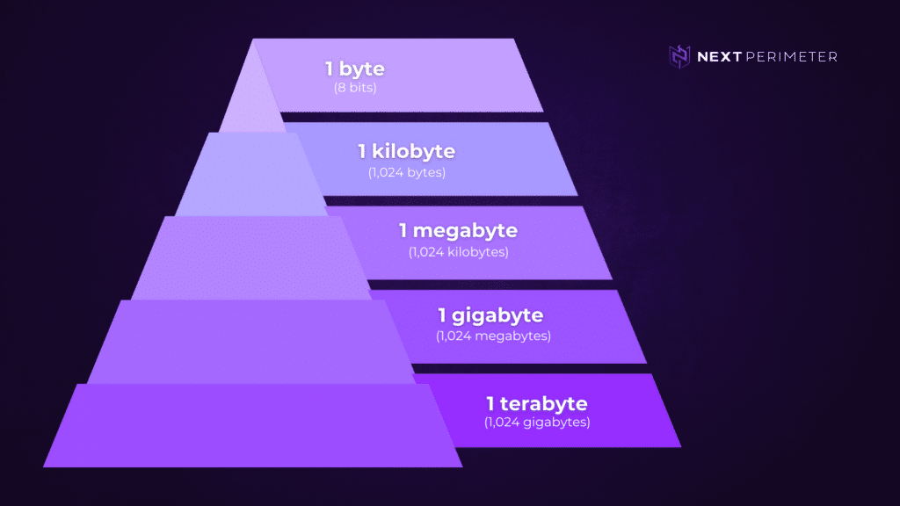

Wat is het binairstelsel?
Binaire getallen zijn eigenlijk de taal die computers begrijpen.
Het binair stelsel is een talstelsel dat maar met twee cijfers werkt,
de 0 en de 1. Computers kunnen met deze twee cijfers berekeningen uitvoeren
en heel veel informatie opslaan. Het binaire stelsel werkt eigenlijk op dezelfde manier
als ons decimaal talstelsel, waarbij we werken met de cijfers 0 t/m 9.
Wat zijn bits en bytes?
Bits
Bits zijn de allerkleinste eenheid van data in een computer. Omdat een computer met het
binair stelsel werkt, kan een bit maar twee waarden hebben, 0 of 1. Vaak betekenen deze
waarden aan / uit, waar / niet waar, ja / nee, etc.
Bytes
Bytes zijn weer wat groter dan bits. Het is de kleinste eenheid om de grootte van een
bestand te meten. Een byte bestaat uit 8 bits. Bij 1 bit heb je 2 mogelijkheden, maar bij
8 bits heb je 28 mogelijkheden. Bij een byte heb je dus 256 mogelijkheden. Hoe groter het
aantal mogelijke combinaties, hoe groter het opslaggeheugen van je apparaat is.
Een byte is dus de standaardmaat om de grootte van een computerbestand te meten. Het is
een beetje hetzelfde als dat je meet hoeveel liter water je verbruikt, dat is de standaardmaat
voor water. Zo is een byte dat dus voor bestanden.

ASCII-tabel
Hoe werkt dit?
Elk stukje data, zoals tekst of afbeeldingen, wordt in binaire vorm verwerkt. Op deze manier
begrijpt de computer wat het moet doen. Daarom worden alle toetsen op je toetsenbord,
zoals letters, cijfers en leestekens, omgezet naar een bepaalde code in het binair stelsel.
Dit is te zien in de ASCII-tabel.

Waarom wordt dit gebruikt (en niet het decimaal talstelsel)?
Het binair stelsel wordt gebruikt omdat het voor computers makkelijker is om te kiezen
tussen twee verschillende dingen, dus 0 of 1, wat dan kan staan voor bijvoorbeeld aan of uit.
Dit is makkelijk omdat computers met elektronica werken die ook alleen aan of uit kan staan,
er zit niets tussenin. Het wordt dus vooral gebruikt omdat het een stuk eenvoudiger is dan het
decimaal talstelsel.